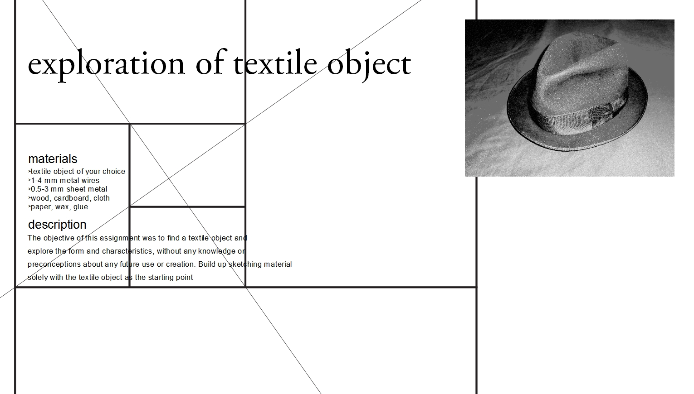
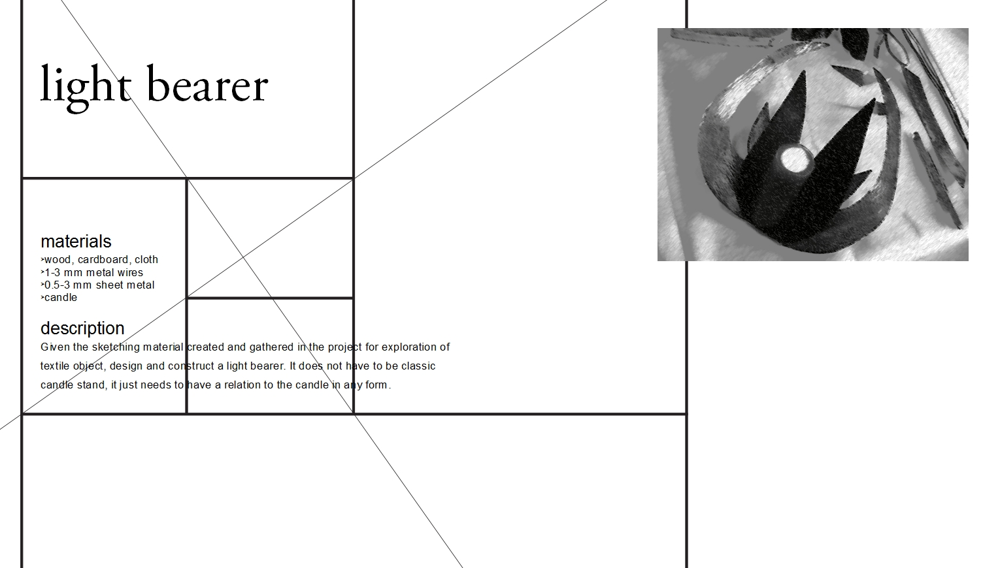
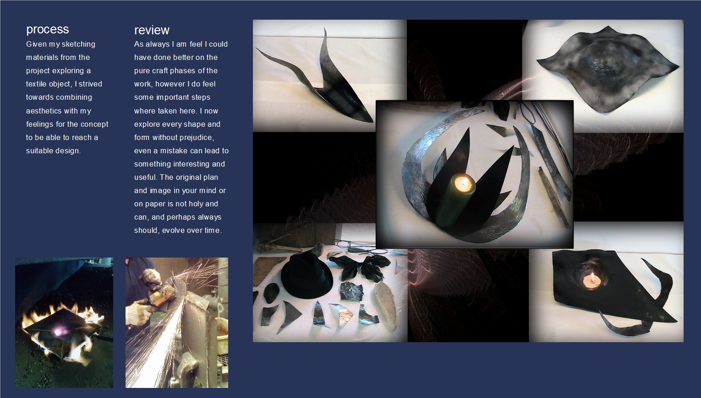

<div class="container1">
	<div id="breadcrumb">
		<ul>
			<li class="first">You Are Here</li>
			<li>&#187;</li>
			<li><a href="index.html">Home</a>
			</li>
			<li>&#187;</li>
			<li><a href="#" onClick="load('projects')">Projects</a>
			</li>
			<li>&#187;</li>			
			<li class="current"><a href="#">Light Bearer</a>
			</li>
			<li>&#187;</li>
		</ul>
	</div>
	<br /> <br />

	<h1>Light Bearer</h1>
	<div id="gallery" class="box">
		<ul>
			<li><a data-gal="prettyPhoto[lightbearer]" href="work/lightbearer/exploration1.jpg" title="exploration of textile object">
			</a>
			</li>
			<li><a data-gal="prettyPhoto[lightbearer]" href="work/lightbearer/exploration2.jpg" title="exploration of textile object">
			</a>
			</li>
			<li class="last"><a data-gal="prettyPhoto[lightbearer]" href="work/lightbearer/exploration3.jpg" title="exploration of textile object">
			</a>
			</li>						
			<li><a data-gal="prettyPhoto[lightbearer]" href="work/lightbearer/lightbearer1.jpg" title="light bearer | design">
			</a>
			</li>
			<li><a data-gal="prettyPhoto[lightbearer]" href="work/lightbearer/lightbearer2.jpg" title="light bearer | process">
			</a>
			</li>
			<li class="last"><a data-gal="prettyPhoto[lightbearer]" href="work/lightbearer/lightbearer3.jpg" title="light bearer | review">
			</a>
			</li>
		</ul>
		<br class="clear" />
	</div>

	<br />

	<div class="clear"></div>
</div>

<script type="text/javascript" charset="utf-8">  
  // Needed for prettyPhoto to work after ajax load. Why is not the callback function enough?
  $(document).ready(function(){
	  	postInject();
	});  
</script>
